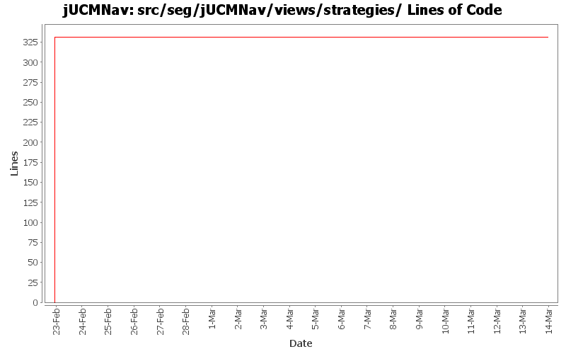

Summary Period: 2005-02-22 to 2006-03-13
[root]/src/seg/jUCMNav/views/strategies

Total Lines Of Code:
331 (2006-03-31 18:01)
| Author | Changes | Lines of Code | Lines per Change |
|---|---|---|---|
| jfroy | 9 (100.0%) | 331 (100.0%) | 36.7 |
Added extension point for the Strategy algorithms
0 lines of code changed in:
Externalize String
0 lines of code changed in:
Added feedback in UCM for URNlinks
0 lines of code changed in:
Added selection feedback in strategies view
0 lines of code changed in:
Fixed problem with the PartListener in StrategiesView
0 lines of code changed in:
Fixed NullPointerException in StrategiesView when no jucm file opened
0 lines of code changed in:
Ended name change.
0 lines of code changed in:
Name change for EvaluationScenario (now called Strategy)
331 lines of code changed in:
Generated by StatCVS 0.2.4